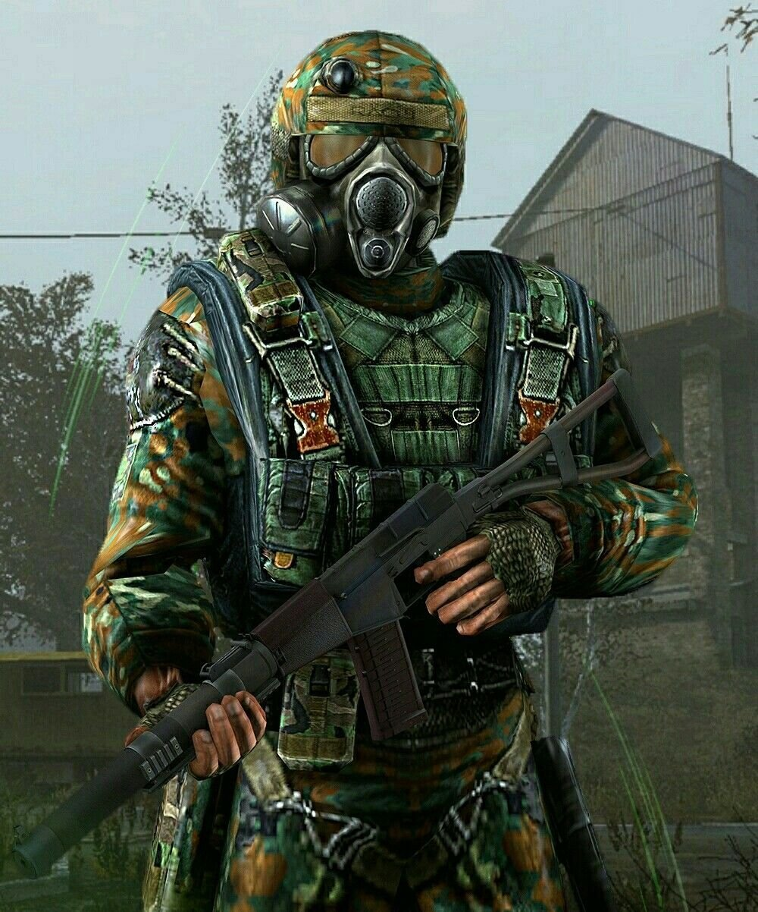
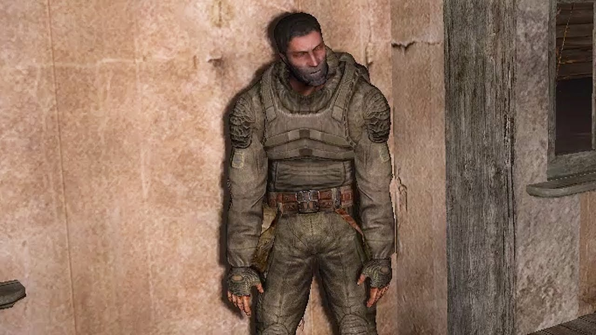
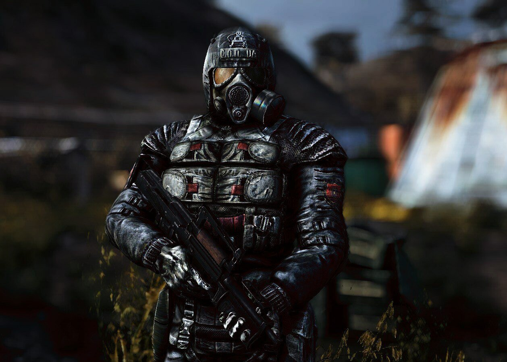
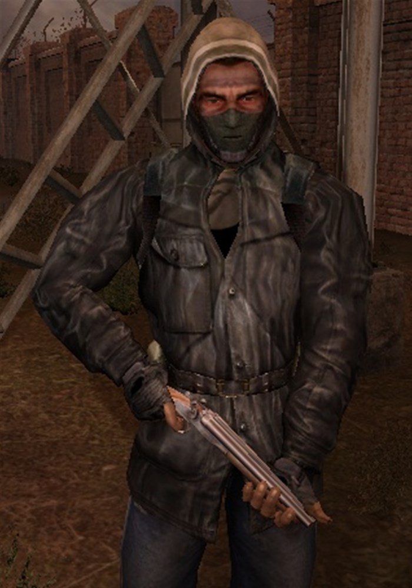
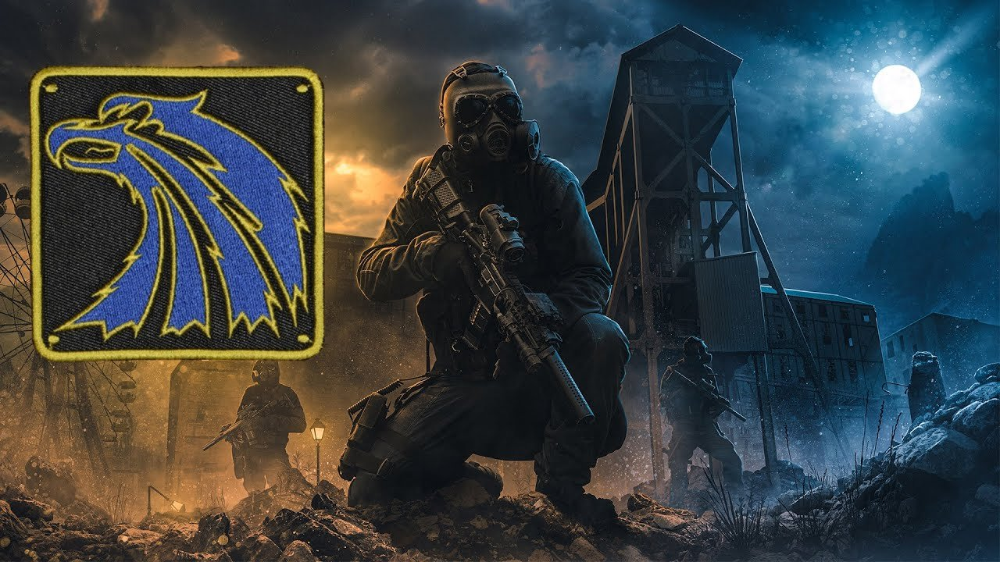
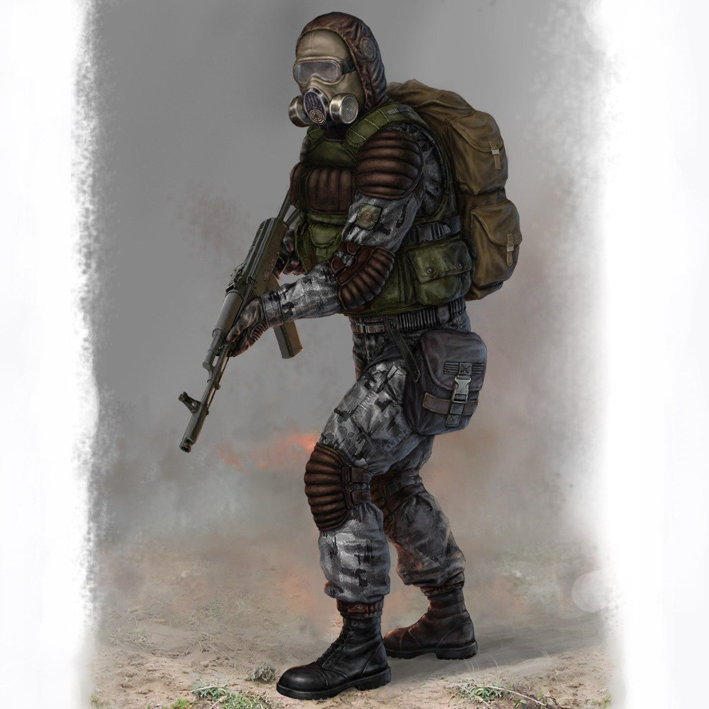
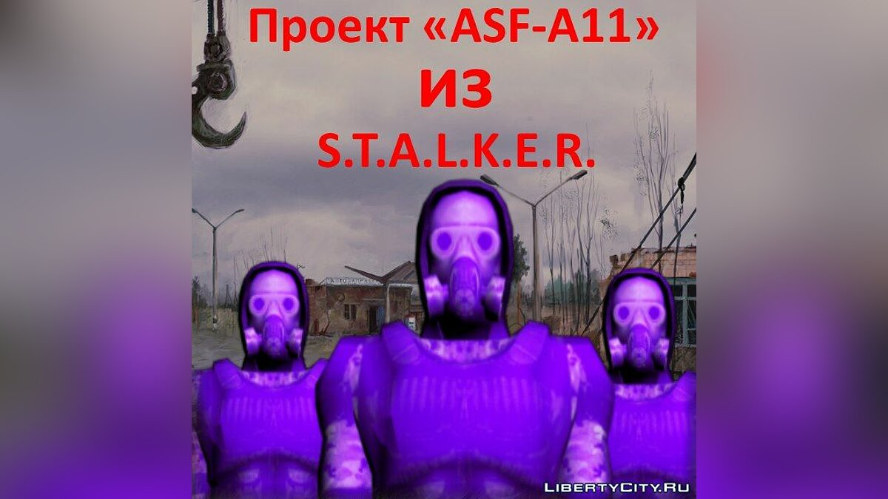
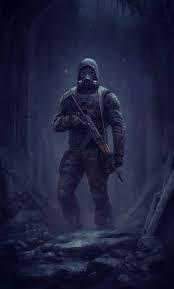

«Анархисты и сорвиголовы, объявившие себя борцами за свободу на территории Зоны, и поэтому постоянно конфликтующие с армейскими подразделениями, военными сталкерами и группировкой «Долг». «Свободовцы» считают, что информацию о происходящем в Зоне нельзя скрывать от человечества, таким образом оспаривая монополию правительственных организаций на владение здешними тайнами и чудесами.»
«Свобода» является идеологическим противником «Долга», кроме того, группировка в открытую сопротивляется военным и «Монолиту». Отношения с наёмниками довольно сложные и порой враждебные, однако позже между ними был заключён нейтралитет. С бандитами отношения враждебные. В 2011—2012 годах «Свобода» вела войну с наёмниками. Во времена ЗП, если верить словам Дядьки Яра, между кланами мир, поскольку война стоила немалых жертв обеим группировкам
Группировка имеет выход в чёрный рынок Зоны, откуда им и поставляют оружие. Члены «Свободы» вооружены преимущественно зарубежными видами оружия, однако используют и такое отечественное вооружение, как, например, Фора-12, АКМ-74/2, АКМ-74/2У, а также один член группировки (Костюк) использует СА «ЛАВИНА». Среди членов группировки много снайперов, использующих СВДм-2 и СВУмк-2. Также используют и трофейное оружие. «Свобода» также имеет в запасе своего арсенала гранатомёт «Бульдог-6». Один гранатомёт лежит на складе группировки, а другой — в подвале деревни кровососов, принадлежавший Угрюмому, хранителю группировки. Экипировка: комбинезон «Ветер свободы» и комбинезон «Страж свободы». Первый сделан как облегчённая версия комбинезона сталкера. Второй существует в двух видах: один является усиленным комбинезоном одиночек, а другой производится на основе военного бронекостюма «Берилл-5М». Также у группировки есть собственная модель экзоскелета. Комбинезоны большинства свободовцев раскрашены в камуфляж Woodland, что соответствует их излюбленной тактике — стрелять издалека. Костюмы некоторых других членов группировки раскрашены в немецкий камуфляж Flecktarn
Ссылка на то что из себя представляет свобода Те, кто подвергся длительному воздействию излучателей на «Янтаре» или некоторых других секторах. Неосторожные сталкеры быстро сходят с ума, превращаясь в бродячие полутрупы. Их много бродит по Зоне, некоторые добираются даже до периметра. Так или иначе, помочь им уже невозможно: процесс разрушения личности необратим. Хотя зомбированные сталкеры ещё могут воспользоваться своим оружием, они довольно глупы. При встрече можно услышать, как они бубнят себе под нос обрывки фраз, — которые, впрочем, начисто лишены смысла. Со временем зомбированные сталкеры окончательно утрачивают все прежние навыки и превращаются в зомби. Как правило, они очень агрессивны и при значительном скоплении представляют серьёзную угрозу.
Ссылка на то как становятся зомбированнымии вот 50 фактов про них
это в основном предатель воееных но которые основали свою крайне воеенизированую группировку. Их цель это уничтожить зону а именно мутантов и всякий отброс в лице Свободы и Бандитов их долг считает главной своей целью. Они дружат как со сталкерами но в 2012 году испортили их из-за Генерала Воронина.
история появления её она появилась в 2011 году основана Генералом Таченко но после того как он отправился в рейд он так и не пришёл Майор Дектярёв их находит в пространственном пузыре все погибли но в 2012 годах руководителем долга становится Генерал Крылов он сильно развил долг основал базу на НИИ агропром и не спроста там очень много монстров и они делали рейд на норы монстров и даже забирали документы по исследованию О-Осознания и они активно дружили со сталкерами сталкеры сотрудничали с долгом а долг сотрудничал со сталкерами но после смерти генерала Крылова а он погиб во время переноса базы в бар 100 ренген руководителем стал Генерал Воронин долг с ним жёстко деградировал если генерал Крылов и искал артефакты так как он говорил на войне все средства хороши но генерал Воронин запретил их искать и разрешил публичные казни сталкеров дружба со сталкерами исчезла а пополнять ряды долга стали лишь воееные предатели.
ссылка на подробную информацию о долге. ссылка на то почему долг стал злым Представители криминального мира, пришедшие в Зону по разным причинам: заработать на продаже артефактов, скрыться от закона, купить или продать оружие. В Зоне много подобного элемента уровнем от шпаны до серьёзных уголовников. В большинстве своём объединены в банды. Хотя единой бандитской организации в Зоне до сих пор нет. Сильно докучают рядовым сталкерам.
любой бандитский «пахан» командует своей «бригадой» в соответствии с негласными «понятиями», которые, могут меняться в зависимости от ситуации. Каждая банда действует отдельно от остальных, руководствуясь как возможностью получить наибольшую выгоду, так и желаниями «бугра» (обычно это авторитетный уголовник с большим стажем).
 ссылка на то кто такие бандитыНаёмники — группировка, представляющая из себя формирование, выполняющее задания на заказ. Основная специализация — заказные убийства и поиск документов; впрочем, члены группировки не гнушаются и другой работой.
вооружение наёмников Наёмники носят серо-голубые защитные комбинезоны неизвестной модели и вооружены самыми лучшими образцами западного вооружения. Представители группировки носят три вида брони — комбинезон наёмника, комбинезон «СЕВА» и экзоскелет, — немного изменённые внешне: покрашенные в цвета группировки. Комбинезон наёмника, скроенный по западному образцу, у наёмников встречается повсеместно (с разницей в том, что некоторые носят противогаз, а некоторые — маску). Бронежилет удовлетворительно защищает от пуль и взрывов, но не даёт почти никакой защиты от аномалий. «СЕВУ» и экзоскелет можно встретить крайне редко у наёмников ранга «ветеран» или «мастер»: в ТЧ, например, наёмника в «СЕВЕ» или экзоскелете можно встретить на локации после уничтожения блокпоста наёмников на Военных Складах или на Дикой территории после прохождения лаборатории X16. Известен наёмник по прозвищу Леший — единственный, который носил комбинезон «Заря». В ЗП присутствуют четверо наёмников в костюмах ССП-99М (по-видимому, они занимались исследованием лаборатории X8), и если вспомнить информацию про некоего «своего человека», устроившего отряд Чёрного в охрану бункера учёных, то можно предположить, откуда наёмники получили эти костюмы. Наёмники хорошо вооружены. Имеют выход на чёрный рынок, откуда и ведутся поставки вооружения. В основном это оружие западных образцов, таких как ИЛ86, ТРс-301, СГИ-5к. Новички могут носить пистолет-пулемёт «Гадюка-5» или дробовик СПСА-14. Мастера группировки любят ГП37 и ФТ-200М. Практически на каждое оружие наёмники устанавливают глушитель, ведь часто нужно проводить операцию по-тихому. Подствольными гранатомётами не пользуются, бросают только ручные гранаты. Самым популярным оружием наёмников является ТРс-301, именно с ней чаще всего можно встретить бойцов этой группировки. Несмотря на то, что наёмники предпочитают НАТОвское оружие, есть исключение: в ТЧ снайперы на подходе к Дикой территории вооружены АКМ-74/2 с прицелом ПСО-1. При захвате деревни новичков бойцы штурмовой группы вооружены АКМ-74/2, а командир этой группы — АКМ-74/2У. Также двое наёмников-телохранителей Моргана вооружены АКМ-74/2. Кроме того Гриф и вся его группа вооружены автоматами АС-96/2
 ссылка на то что известно про наёмниковГруппировка, скорее напоминающая религиозную секту. Её члены верят, что в Центре Зоны покоится эволюционный кристалл — Монолит — неземного происхождения. Большинство сталкеров презирают адептов «Монолита», считая их «помешанными». Со времени своего образования группа препятствует продвижению сталкеров к Центру Зоны, мотивируя это недобрыми намерениями последних в отношении Монолита.
Вооружение самое разнообразное, как отечественное, так и зарубежное: снайперские винтовки, ФТ-200М, гранатометы РПГ-7у и пулемёты РП-74, но главное — наличие у мастеров группировки «Изделия №62», более известного, как Гаусс-пушка. Монолитовцев, вооруженных только пистолетами, можно встретить только в ТЧ и только во время защиты Барьера. Пистолетами будут пользоваться гранатомётчики с РПГ-7у, если подойти к ним вплотную. Аналогично ими будут пользоваться монолитовцы с СВДм-2 в ЗП при атаке на ближнем расстоянии. Также монолитовцы обладают экзоскелетами и научными костюмами, в конструкции которых добавляют неизвестные материалы, прочнее и легче своих аналогов. Комбинезоны отличаются камуфляжной раскраской (серо-белый фон с тёмно-серыми пятнами) с тёмно-коричневыми элементами (нагрудники, наплечники, налокотники, наколенники и капюшон) и болотно-зелёной торсовой частью. Существует разновидность научного комбинезона с тёмно-коричневым рюкзаком. Также у группировки имеется тяжёлая броня и экзоскелет зелёно-коричневой раскраски. Многие позиции монолитовцев обладают повышенным радиационным фоном, остается лишь предполагать, каким образом бойцы выживают в таких условиях. В целом, по количеству и качеству экипировки группировка «Монолит» максимально вооружена и снаряжена, ничем не уступая наёмникам и военным. Троих монолитовцев в экзоскелетах можно увидеть во время эвакуации, одного в путепроводе во время первого нападения «Монолита» и редко в речном порту.
 ссылка на то кто примерно такой монолитГруппировка встречается на Радаре и в лаборатории Х-10. Упоминается, что они проходили мимо Лиманска и пытались уничтожить группировку Ветер. Судя по словам Бороды, эти бойцы — клонированные спецназовцы О-сознания. Программа «защищать своих агентов» дала сбой и теперь бойцы ASF-A11 убивают всех, кроме себе подобных и О-сознановцев. Отряд "ЗЕТА" на Радаре называют их "роботами".
Вооружение Гаусс-лазер — скорострельная винтовка Гаусса «ультрафиолетового цвета» с магазином на 100 зарядов. Борода даёт квест на добычу такой винтовки.
это всё что о них известно это почти не сущёствующая группа.
Одиночки (также вольные сталкеры, иногда нейтралы) — сталкеры, не входящие ни в одну из группировок и в основном действующие в одиночку или небольшими группами непостоянного состава. Составляют, очевидно, большинство среди «населения» Зоны и вот 100 фактов про них.
